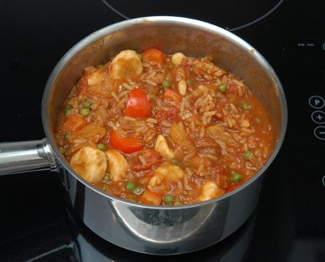

| Zutaten für 4 Personen: | |
| 30 g | Ghee |
| 1 grosse | Zwiebel |
| 2 | Knoblauchzehen |
| 2.5 cm | Ingwer (an der Bircherraffel gerieben) |
| 1 KL | Chilipulver |
| 1 KL | Kreuzkümmelsamen |
| 1 KL | mildes Currypulver |
| 300 g | Reis |
| 5 dl | Wasser |
| 1 Würfel | Gemüsebouillon |
| 400 g | Pelati, aus der Dose |
| Salz | |
| Pfeffer aus der Mühle | |
| 150 g | gedörrte Aprikosen (halbgedörrte) |
| 1 | rote Peperoni |
| 1 Tasse | tiefgekühlte Erbsen |
| 2 kleine | (noch grüne) Bananen |
| 100 g | Nussmischung |
Ghee in einer grossen Pfanne erhitzen.
Zwiebel fein schneiden und andünsten.
Knoblauch, Ingwer, Chilipulver, Kreuzkümmelsamen, Currypulver zugeben und 2 Minuten Rührbraten.
Reis und Wasser dazu giessen.
1 Würfel Gemüsebouillon, dann Pelati, aus der Dose zugeben.
Mit Salz und Pfeffer aus der Mühle würzen, alles zum Kochen bringen.
Hitze auf kleinste Stufe reduzieren und zugedeckt 10 Minuten köcheln lassen.
Nicht Rühren!
Gedörrte Aprikosen in Streifen schneiden und zugeben.
Rote Peperoni waschen, putzen und in Würfel schneiden, zugeben.
Tiefgekühlte Erbsen zugeben, das Gemüse vorsichtig unter den Reis mischen und 10 Minuten weiter köcheln lassen.
Bananen in Scheiben schneiden, mit einer Gabel den Reis auflockern, Bananen zugeben.
Nussmischung ev. rösten, darauf streuen und servieren!
Patricia Krummenacher, Indischer Kochkurs, 2006
Am 12.1.2010 hat das hervorragend geschmeckt. RE